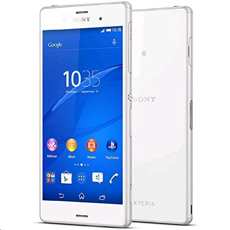

Introduction
To say we are eager to get the Xperia Z3 out for a spin would be a massive understatement - with the race track still warm from the Compact. After all, if the Robin in Sony's IFA lineup can do that well, we can only imagine what Batman is capable of. The Z3 is certainly one you wouldn't want to miss.
Sony's shorter update cycle sees the Xperia Z3 clock in just 6 months after its predecessor. At first glance, the next flagship isn't too generous with the upgrades, but anyone who has handled the Xperia Z2 will see most of its key issues addressed.
Curved at the edges for a fresh new look, the handset is supposed to offer improved ergonomics. Add the slimmer bezels, the loss of weight and the slimmer profile, and the Sony Xperia Z3 is already looking strong in the only area where its predecessor was open to criticism.
But it's not just the weaknesses that need looking at and the Xperia Z3 knows that. It tries to work on the main strengths of the Xperia Z2 too - it's got a higher IP certification while the 20MP camera has received a few cool new modes. Yet, it was the image processing that wasn't quite spot on last time around and we are really curious if Sony got it right this time.
But let's not get ahead of ourselves and stick to the plan - here goes the Sony Xperia Z3 review cheat sheet.
Key features
5.2" IPS LCD, 1080 x 1920 pixels, 424ppi, ambient light sensor LTE connectivity Android 4.4.4 KitKat with Xperia UI on top IP68 certified - dust and water proof up to 1.5 meter and 30 minutes Qualcomm Snapdragon 801 chipset with quad-core 2.5GHz Krait 400 processor, Adreno 330 GPU and 3GB of RAM 20.7MP camera, single LED flash, 2160p video recording, dedicated hardware shutter key 2.2MP front-facing camera with 1080p video recording 16/32GB of built-in storage, expandable via the microSD card slot Active noise cancellation with a secondary microphone 3,100mAh battery; STAMINA Power Saving Mode Stylish dual glass-panel design
Main disadvantages
Non user-replaceable battery Slightly larger than most direct rivals On the list of not-so-major improvements brought by the Sony Xperia Z3 we have a slightly faster CPU, wider audio format support and a longer list of compatible LTE bands. Curiously however, the battery capacity has been reduced - we can't help but wonder if the new flagship can match the excellent time of its predecessor? So, a seemingly subtle update is already raising several interesting questions and it's about time we set to find the answers. Join us after the break where we examine the exterior and see if the new, curvier design works as well in real life as it looks in those pictures.